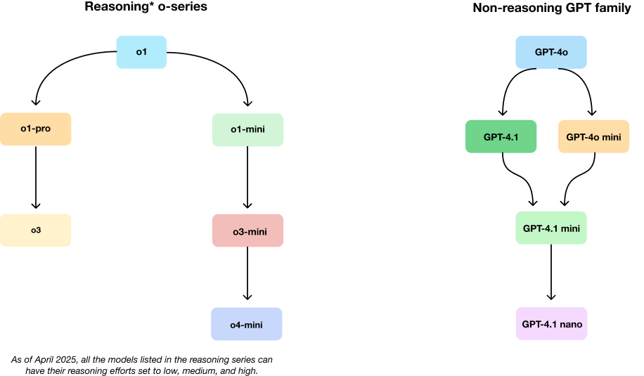

Model Guide#
Model‑Intro Matrix#
Model |
Core strength |
Ideal first reach‑for |
Watch‑outs |
Escalate / Downgrade path |
|---|---|---|---|---|
GPT‑4o |
Real‑time voice / vision chat |
Live multimodal agents |
Slightly below 4.1 on text SOTA (state-of-the-art) |
Need deep reasoning → o4‑mini |
GPT‑4.1 |
1 M‑token text accuracy king |
Long‑doc analytics, code review |
Cannot natively reason; higher cost than minis |
Tight budget → 4.1‑mini / nano |
o3 |
Deep tool‑using agent |
High‑stakes, multi‑step reasoning |
Latency & price |
Cost/latency → o4‑mini |
o4‑mini |
Cheap, fast reasoning |
High‑volume “good‑enough” logic |
Depth ceiling vs o3 |
Accuracy critical → o3 |
(Full price and utility table → Section 6.1)
Model Evolution at a Glance#
OpenAI’s model lineup has evolved to address specialized needs across different dimensions. These diagrams showcase the current model families and their relationships.
Fundamental Differences: “o-series” vs “GPT” Models#
OpenAI offers two distinct model families, each with unique strengths:
GPT Models (4o, 4.1): Optimized for general-purpose tasks with excellent instruction following. GPT-4.1 excels with long contexts (1M tokens) while GPT-4o has variants for realtime speech, text-to-speech, and speech-to-text. GPT-4.1 also comes in a mini, and nano variant, while GPT-4o has a mini variant. These variants are cheaper and faster than their full-size counterparts.
o-series Models (o3, o4-mini): Specialized for deep reasoning and step-by-step problem solving. These models excel at complex, multi-stage tasks requiring logical thinking and tool use. Choose these when accuracy and reasoning depth are paramount. These models also have an optional
reasoning_effortparameter (that can be set to low, medium, or high), which allows users to control the amount of tokens used for reasoning.
OpenAI Model Evolution#

Key Characteristics#
GPT-4.1 Family: Optimized for long context processing with 1M token context window.
o3: Specialized for deep multi-step reasoning.
o4-mini: Combines reasoning capabilities with vision at lower cost.
Each model excels in different scenarios, with complementary strengths that can be combined for complex workflows.